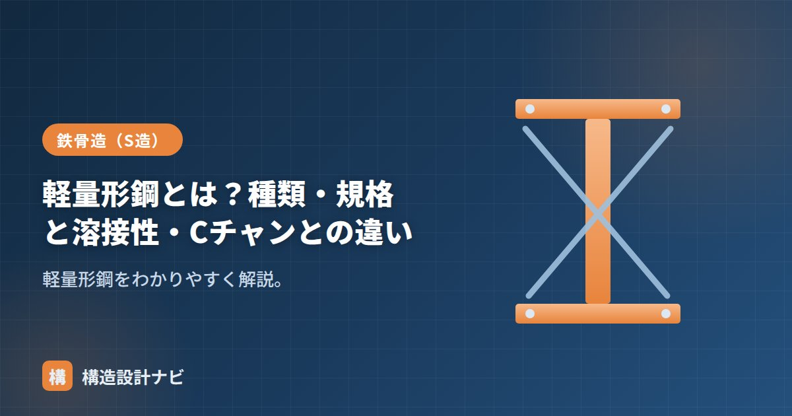

軽量形鋼とは？種類・規格と溶接性・Cチャンとの違い

軽量形鋼（けいりょうかたこう）とは、薄い鋼板を常温で曲げ加工（冷間ロール成形）してつくる形鋼です。熱間圧延でつくるH形鋼などの重量形鋼に比べて板厚が薄く軽いため、母屋・胴縁などの二次部材や、間仕切り壁の下地材として広く使われます。
- 軽量形鋼は薄板を常温で曲げてつくる形鋼。規格はJIS G 3350、材質はSSC400。
- 板厚が薄いため溶接に不向きで、ボルト・ビス接合が基本。局部座屈にも注意。
- 代表格はリップ溝形鋼（Cチャン）。軽量鉄骨造や下地材として使われる。
軽量形鋼の種類
| 種類 | 特徴 |
|---|---|
| リップ溝形鋼（C形鋼・Cチャン） | 溝形の口にリップ（縁折り返し）を付けたもの。最も一般的 |
| 溝形鋼（リップなし） | コの字形 |
| Z形鋼 | Zの字形。母屋などに |
| ハット形鋼・山形鋼 | 帽子形・L形の薄板成形 |
製法
軽量形鋼は、コイル状の薄い鋼板を連続したロール群に通し、常温のまま少しずつ角度をつけて折り曲げていく冷間ロール成形でつくられます。熱を加えないため、H形鋼のような熱間圧延に比べ製造設備が小さく済み、比較的自由な断面形状を経済的につくれるのが利点です。一方で常温での曲げ加工のため、板厚を厚くするほど成形が難しくなり、結果として薄板の製品に用途が限られます。
規格
軽量形鋼はJIS G 3350（一般構造用軽量形鋼）で規定され、材質記号はSSC400です。板厚はおおむね1.6〜4.0mm程度と薄いのが特徴です。H形鋼など熱間圧延形鋼（JIS G 3192）とは規格・記号がまったく異なるため、仕様書や見積りでは混同しないよう注意してください。
溶接性の注意
軽量形鋼は板厚が薄いため、溶接すると母材が焼け落ちやすく、溶接接合には向きません。接合はボルト・ドリルビス・タッピングねじが基本です。また薄板ゆえ局部座屈を起こしやすく、断面性能を十分に発揮させる工夫（リップ等）が必要です。
リップ溝形鋼（Cチャン）との関係
現場で「Cチャン」と呼ばれるのは、軽量形鋼の中のリップ溝形鋼を指すのが一般的です。溝形鋼の開口部にリップ（縁の折り返し）を付けることで、薄板でも局部座屈に強くなり、断面性能が向上します。つまり「軽量形鋼」という大きなくくりの中に、代表選手として「リップ溝形鋼（Cチャン）」がある、という関係です。
使われ方
軽量形鋼は、屋根や外壁の下地となる母屋・胴縁、天井や間仕切り壁の下地材（LGS）など、大きな荷重を負担しない部材に多用されます。また、軽量形鋼を主要な柱・梁に用いる建物を軽量鉄骨造と呼び、戸建て住宅や小規模な倉庫などで採用されます。荷重の大きい主要構造部材にはH形鋼などの重量形鋼、荷重の小さい二次部材には軽量形鋼、というように使い分けるのが一般的です。
現場で軽量形鋼を溶接で仮止めしているのを見かけたことがあります。板厚が薄く母材が焼け落ちるため本来はビス・ボルト接合が原則で、仕様書に明記していても現場任せにせず一度は立会いで確認するようにしています。
材質規格は「一般構造用軽量形鋼SSC400」、薄板の特性は「薄肉と軽量鉄骨」、形鋼全体は「形鋼とは」をどうぞ。なお「軽量」を含む用語には、コンクリート用の「軽量骨材」「軽量コンクリート」もありますが、これらは鋼材ではなく別分野の用語なので混同しないよう注意してください。
断面形状を図で見る
図のオレンジの丸がリップです。板の端をもう一度内側に折り返しただけの小さな出っ張りですが、これがあるだけで断面の縁がへこみにくくなり、曲げにも圧縮にも強くなります。だからリップ付きのCチャンは柱にも梁にも使える万能材、リップのない溝形鋼は主に軽い下地材、という使い分けになります。
現場での選び方の目安
| 用途 | よく使う断面 | 選定のポイント |
|---|---|---|
| 軽量鉄骨造の柱・梁 | リップ溝形鋼（C-100×50×20×2.3 など） | 2本を背中合わせにして「箱」にすると座屈に強くなる |
| 母屋（屋根の下地） | リップ溝形鋼・リップZ形鋼 | Z形は連続梁として重ねられ、継手が納まりやすい |
| 胴縁（外壁の下地） | リップ溝形鋼・ハット形鋼 | 風圧に対する曲げで決まる。スパンとたわみを確認 |
| 天井・間仕切下地 | 軽天材（スタッド・ランナー） | 構造材ではなく仕上げ下地。厚さ0.5mm前後 |
| ブレース受け・小口 | 山形鋼（アングル） | ボルト接合しやすく、部分的な補強に便利 |
Cチャンは断面が左右非対称です。重心（図心）と、ねじれの中心（せん断中心）がずれているため、まっすぐ荷重をかけたつもりでもねじれながら曲がることがあります。単材で長いスパンを飛ばすと想定よりたわむので、2本を組んで対称断面にする、または横方向の振れ止め（振止め・ブレース）を入れるのが基本です。
よくある質問
Q1. 軽量形鋼と一般の形鋼（H形鋼など）は何が違うのですか？
つくり方と板厚が違います。軽量形鋼は常温で薄い鋼板を折り曲げる冷間成形で、板厚は1.6〜4.5mm程度。H形鋼などは赤熱させて圧延する熱間圧延で、板厚は6mm以上が中心です。軽量形鋼は軽くて安く加工しやすい反面、局部座屈と腐食に弱いという性格の違いがあります。
Q2. Cチャンの「C-100×50×20×2.3」はどう読みますか？
順に「高さ100mm × 幅50mm × リップ長さ20mm × 板厚2.3mm」です。最後の数字が板厚で、同じ100×50でも板厚1.6と2.3では強度がかなり変わります。発注時は板厚の指定を忘れないでください。
Q3. 軽量形鋼は溶接できますか？
板が薄いため溶け落ちや変形が起きやすく、実務ではボルト・ドリルビス接合が基本です。またJIS G 3350のSSC400は溶接性を保証していない鋼種なので、溶接前提の設計は避けます。溶接が必要な部位には、溶接性を保証したSS400以上の材や専用金物を使うのが安全です。
まとめ
- 軽量形鋼は薄い鋼板を冷間ロール成形した形鋼。母屋・胴縁などの二次部材に使う。
- 規格はJIS G 3350、材質はSSC400。板厚が薄く溶接には不向きでボルト・ビス接合。
- 代表がリップ溝形鋼（Cチャン）。リップで薄板の局部座屈を抑える。
- 主要構造部材に用いる建物は軽量鉄骨造と呼ばれる。